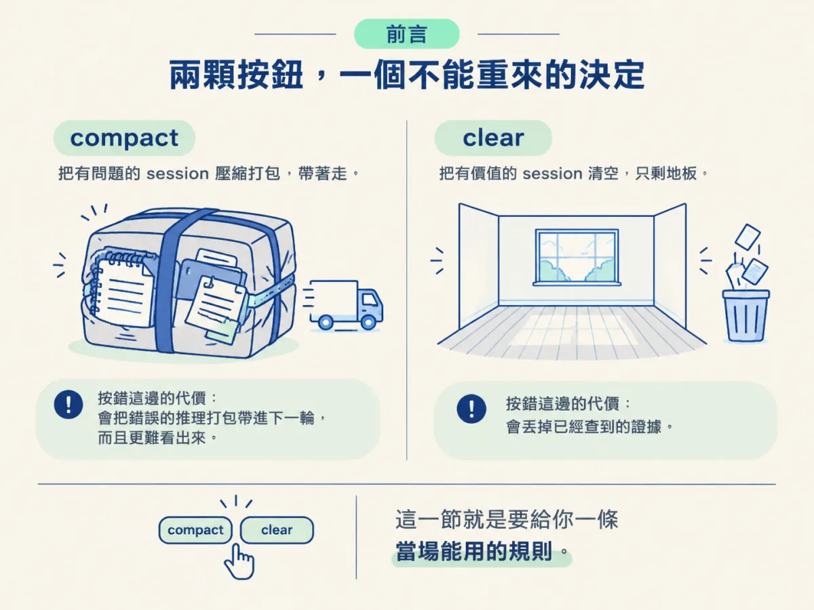
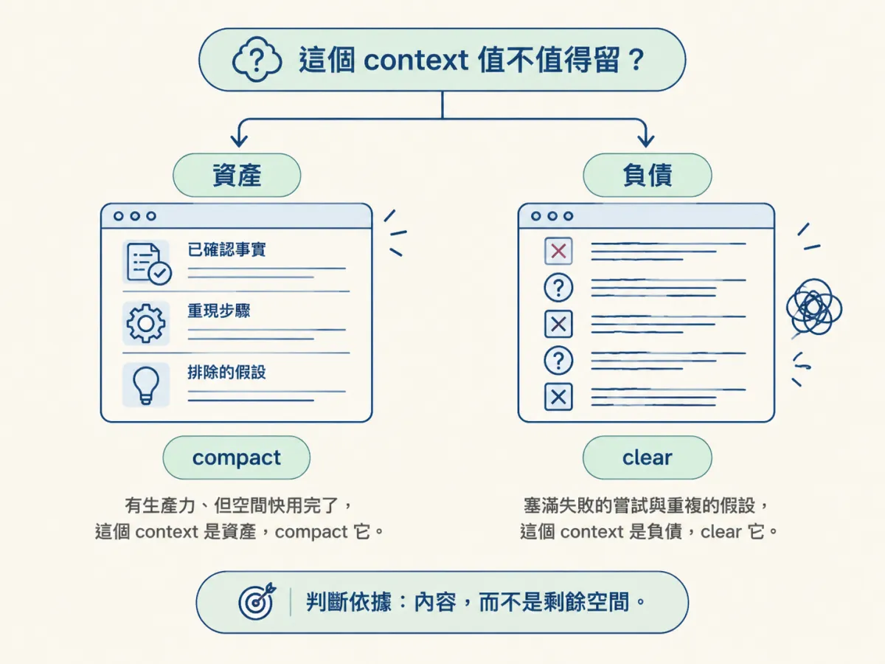
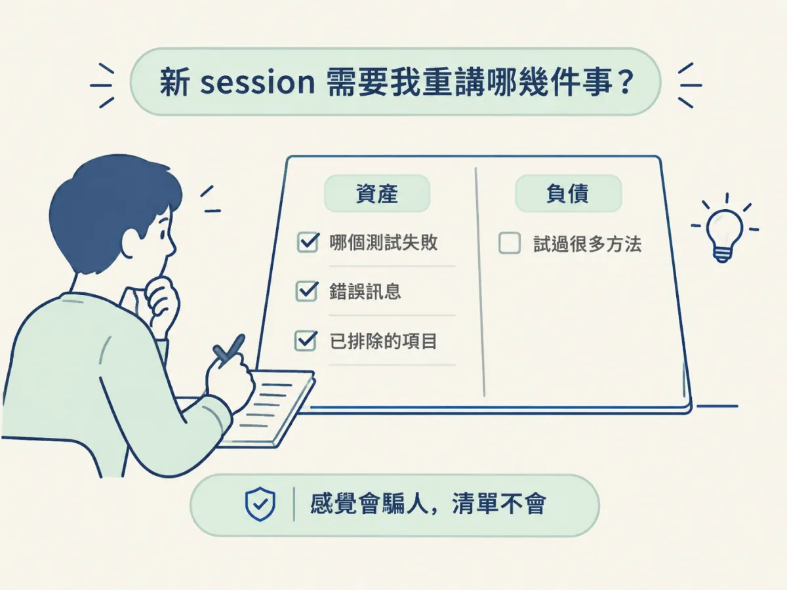
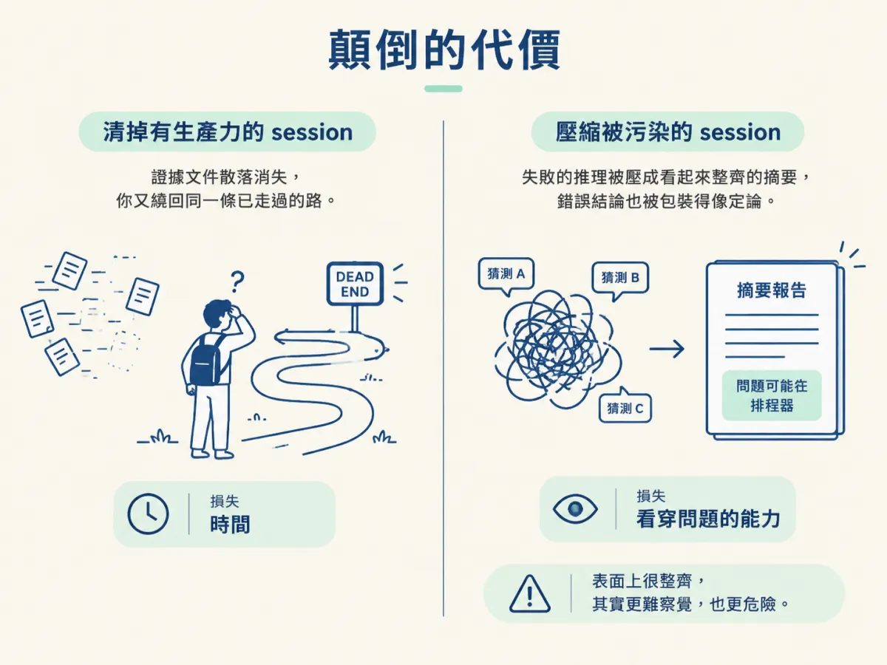

能判斷卡住 session 的 context 是值得 compact 的資產，還是該 clear 的負債，並說出判斷顛倒的兩種代價。
你已經確定 agent 在打轉了。現在滑鼠移到那兩顆按鈕上：一個叫 compact，一個叫 clear。兩顆看起來都像「重來」，但其實只有一顆是重來，另一顆是「帶著東西搬家」。
你只有一個 context，而它現在同時裝著兩種東西：一些你之後還要用的事實，以及一堆失敗的嘗試與重複的假設。麻煩的是，它們混在一起，而且你不會收到任何提示告訴你哪個佔得多。
按錯邊的代價並不對稱：清掉一個有價值的 session，你會丟掉已經查到的證據；壓縮一個被污染的 session，你會把錯誤的推理打包帶進下一輪，而且更難看出來。這一節就是要給你一條當場能用的規則。

嚴格說，你手上有三個動作：繼續下指示、compact、clear。但上一節已經說明為什麼第一個通常不是選項：你正在指揮的東西本身就是故障的一部分，新指示只會被同一個錯誤假設吃掉。
所以剩下的是 compact 與 clear。它們的差別不是「保留」與「刪除」這麼簡單：compact 是把對話摘要成一份更小的版本、留在 window 裡；clear 是把 window 清空，什麼都不帶。這裡的關鍵是，compact 留下的那份摘要由模型產生，你不會在它變成新 context 之前先審查一遍。
如果你對這兩顆按鈕本身還不熟，先回去看 Clear 還是 Compact。這一節只處理一個更窄的問題：在一個「已經卡住」的 session 裡，你要按哪一顆。
來源把整個決策簡化成一句問話：
Is the context this session built worth keeping?
注意它問的不是「這個 session 長不長」、「還剩多少空間」、「agent 表現得好不好」。它問的是：到目前為止累積的這些東西，對我下一步有沒有用。
為什麼要問這個而不是問空間？因為空間快滿只是告訴你「該做點事」，沒有告訴你「該做哪件事」。一個快滿但充滿價值的 session，跟一個快滿但全是失敗嘗試的 session，處理方式正好相反。
來源給的兩個方向很明確：

| 面向 | 資產 → compact | 負債 → clear |
|---|---|---|
| context 裡主要裝什麼 | 已確認的事實、重現步驟、排除過的假設 | 失敗的嘗試、重複的假設、它自己的錯誤結論 |
| 下一步需要什麼 | 那些事實，加上一點脈絡 | 乾淨的起點，加上你手上的證據 |
| 按下去之後 window 裡有什麼 | 一份模型產生的摘要 | 什麼都沒有 |
| 按錯邊會失去什麼 | （其實是負債時）把失敗推理壓縮帶走，更難看穿 | （其實是資產時）它已經收集到的證據 |
表格裡最需要停下來看的是最後一列。兩種代價不是對稱的：clear 錯，你失去的是「已經查到的事實」，通常還能重查，只是花時間；compact 錯，你失去的是「看清楚問題的能力」，因為失敗的推理被壓成摘要之後，看起來會像結論。
「值不值得留」太抽象，當場很難回答。把它換成一個具體的問句：
如果現在開一個全新的 session，我需要重新告訴它哪幾件事？
然後真的列出來，不要只是在腦中想。列的時候有兩種結果：
你能立刻寫下兩三件具體事實，例如「哪一個測試失敗」、「錯誤訊息是什麼」、「已經排除了快取與環境變數」。這些就是資產。它們值得被帶走，所以偏向 compact。
你列不出具體事實，只列得出「我們試過很多方法」。那代表這個 session 累積的主要是嘗試，不是知識。這種情況偏向 clear，然後把你還記得的少數事實自己帶進新 session。
這個問句之所以有效，是因為它強迫你把「感覺這個 session 很長」換成「這個 session 到底產出了什麼」。感覺會騙人，清單不會。

假設你已經在同一個 session 跑了二十輪。目前的狀態是：你知道失敗的是 refresh.spec.ts；你確認過 token 過期後沒有觸發刷新；你排除了快取，也確認環境變數有正常載入。Agent 開始重複改同一個函式，context 也快滿了。
用剛剛的問句：新 session 需要知道什麼？答案是三件具體事實：失敗的測試、實際行為（回 401）、已排除的兩項。清單列得出來，而且都是下一步要用的。所以這是資產，選 compact。
但這裡有一個實作上的細節：compact 的摘要是模型產生的，你看不到它刪了什麼。所以比較穩的做法，是在按下去之前先把那三件事實抄到一個檔案，或直接貼在下一則訊息裡。這樣就算摘要漏掉其中一項，你手上還有原始版本。你接受了「多花一分鐘抄寫」這個小成本，換掉「關鍵事實被壓掉」的風險。
現在把同一個 session 再往後拉十輪。Agent 還是沒修好，但它開始重複同一個假設：「問題一定在 refresh 的排程器」。它每次失敗就改一次排程器，改完又改回來，diff 越來越亂，還跟你先前確認過的「排程器不是問題」互相矛盾。
再用同一個問句：新 session 需要知道什麼？這次你列出來的清單，大部分是「試過 A、試過 B、試過 C，都失敗」，加上一個它一直重複的錯誤假設。這些不是下一步要用的知識，是包袱。所以判斷翻轉：這是負債，選 clear。
注意，翻轉的關鍵不是「又過了十輪」，也不是「context 更滿了」。是清單的內容變了：從具體事實變成失敗嘗試。這也是為什麼你要用問句而不是用感覺：感覺在這兩次情境裡可能差不多，清單卻完全不同。
來源特別提醒，這兩種錯誤都很貴，而且貴的方式不一樣。
清掉一個有生產力的 session：你丟掉它已經收集到的證據。那些證據通常不是隨手可得，你可能花了好幾輪才排除掉某個可能，清掉之後要重跑一次。你不一定記得自己排除過什麼，所以甚至可能重新走一遍同樣的死路。
壓縮一個被污染的 session：你把失敗的推理以壓縮的形式帶到下一輪。這更糟，因為摘要讓它看起來更像結論，而失去的細節又讓你更難發現它錯在哪。原本在對話裡還看得出「這是它第三次猜同一個東西」，壓縮之後只剩一句「問題可能在排程器」。

當 context 裡多數是「下一步還要用的具體事實」，選 compact；當多數是「失敗的嘗試與重複的假設」，選 clear。分不出來時，先把事實抄下來，再 clear。抄完之後，clear 的成本就只剩對話。
最後那句是從上面的判斷延伸出來的操作習慣，不是來源的原文，但它符合來源的邏輯：clear 失去的是對話，不是工作；你的 scope、spec 與 AGENTS.md 都還在磁碟上。真正會痛的是那些只存在對話裡的事實，所以把它們搬出來，clear 就變安全了。
卡住的 session 只有一個關鍵判斷：這個 context 值不值得留。有生產力、只是快滿了，它是資產，compact；塞滿失敗嘗試與重複假設，它是負債，clear。用「新 session 需要我重講哪幾件事」來判斷，列得出具體事實就是資產，只列得出「試過很多方法」就是負債。清掉資產會丟掉證據，壓縮負債會把錯誤推理打包帶走，後者更難察覺。
判斷完，才有資格談動作。下一節把五步升級照順序走一遍，並且告訴你：不是每個卡住的 session 都該被救，有些其實是在提醒你計畫本身錯了。